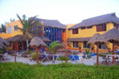

Getting There
Flying
To get to Isla Mujeres you must fly into Cancun International Airport. It's the largest airport in Mexico so just about every major airline has flights through there. We always take Airtran out of Atlanta.
Getting through Customs/Immigration
During your flight you'll be given a customs and immigration form. Fill these out and keep them readily available. Once you leave the terminal you'll go through immigration and then you'll go to baggage claim. Once you have your luggage you can then proceed through customs. Once through customs just follow the signs past all of the travel agencies and car rental places to exit the building. The exit is where all of the taxis and transportation companies will meet you.
Airport to Ferry
You’ll need to book some type of transportation from the Cancun airport to Puerto Juarez (the port where you’ll jump on the ferry). You can take a taxi but we recommend pre-booking a shuttle because it’s nicer and cheaper. We recommend either USA Transfers or Best Day. They’ll be waiting on you when you arrive from the hotel and then give you a ride back to the airport from Puerto Juarez for your departure.
Ferry to the Island
Once you arrive at Puerto Juarez, buy a ticket for the ferry, grab a cerveza in the convenience store and wait on the next ferry (they run every 30 minutes). The ferry takes about 20 minutes and will drop you off in the heart of downtown (El Centro) Isla Mujeres.
Getting to Your Hotel
If your accommodations are located in El Centro (downtown), you can just walk. Downtown is pretty small and you should be able to get to any of the downtown hotels in 5 minutes or less. If your hotel is anywhere else you’ll want to either get a taxi or rent a golf cart (see below). There is a taxi stand immediately to the left of the ferry port.
Travel Tips
Here's a few tips we've learned over the years of traveling here.
- Call your credit card company and your bank to alert them in advance of foreign travel. Some banks won't let you use the card in foreign lands without notifying them first in an effort to guard against fraud.
- Pack in one carry-on luggage if possible. It makes getting through customs so much quicker (and it's cheaper).
- Pack light. Besides clothes for the wedding itself, you'll spend most of the time in your bathing suit!
- Bring and wear sunscreen!
Accomodations
There are lots of options on where to stay on the island. There are lots of hotels on the island ranging from small boutique hotels to larger luxury hotels with varying ammenities. There are also tons of vacation rental homes throughout the island. The best place to find those are by searching through VRBO.com We know picking one out will be difficult since most of you have never been so we are going to make a couple recommendations.
Bahia Tortuga - Owned by a couple from Texas, Bahia Tortuga is a small boutique hotel with only 5 rooms but very new, clean and comfortable. It has a fun atmosphere with a pool and bar and is located close to downtown. This one will go fast as it starts at $65/night and in a great location.

Villa la Bella - Another small boutique hotel on the Caribbean side that is very laid back and has a pool, bar and spa services. Also located a few hundred yards from our favorite breakfast spot Mango Cafe. Starts at $110/night and includes breakfast.
Privilege Aluxe - A large luxury hotel located in the heart of downtown on North Beach. Has a VERY nice pool with a swim-up bar. Starting at $150/night. All-inclusive is also available.
Bahia Cha Cchi - New modern mid-size hotel located in the heart of downtown right in front of the ferry port. Walking distance to beach and all downtown restaurants. Has a small pool but it doesn't have direct sunlight. Starting at $65/night.
Hotel Rolandi - Considered by most to be the nicest hotel on the island. Located just a few hundred yards from the wedding location, Hotel Rolandi has two pools, spa services, a private beach, hot tubs on the balcony of every room and a restaurant. Every room is a suite and includes complimentary breakfast in your room. Also, when you stay here they pick you up from Cancun on a yacht and bring you directly to the hotel. Starting at $381/night.
What's the dress code for the wedding?
The dress code is "classic beach chic wear". Men can opt for linen pants, khakis or a summer suit with a button-down shirt. Long-length or knee-length sundresses are a good choice for women, and guests can even bring along a sunhat, sunglasses or small parasol if the wedding is in direct sunlight. No T-shirts, No shorts, No blue jeans please.
Do I need a passport to visit Mexico?
Yes. Everyone needs a passport to enter Mexico.
Can I drink the water?
No! Drink bottle water only! You can, however, use tap water to brush your teeth, just don't drink it.
Should I rent a golf cart?
You don’t NEED a golf cart to get around on the island, but we definitely recommend renting one. On most, you can easily fit 4 people and they range from $40-$45 USD. There are plenty of taxis on the island so you can make do without one BUT not only is it super convenient to have a golf cart at your disposal but it’s also the best way to really see all that the island has to offer. Some of our favorite times on our past trips were just driving around the island exploring the streets and stopping into places that caught our eye.
To us it’s a “must-do”.
What is there to do on the island?
The number one thing to do on the island is to relax on the beach! Playa Norte is the largest and most popular beach on the island. It's on the north side of the island right next to El Centro (downtown) so it's super convient. There are lots of other smaller beaches throughout the island as well. Most of these are a part of a beach club.
The second most popular thing to do on the island is to eat and drink! The island is filled with tons of great restaurants and bars. The highest concentration is definitely in the downtown area but there are lots of amazing places throughout.
Swim with whale sharks! The number one adventurous thing to do! We recommend using www.onislamujeres.com. Jorge is awesome!
Isla Contoy - Several companies offer day trips to this small island which acts as a bird sanctuary.
Snorkeling & Scuba Diving - lots of companies offer trips but we've heard great things about Sea Hawk Divers.
Tortugranja (Turtle Farm) - a turtle farm where you can get hands on.
Garrafon Natural Reef Park - park that offers some of the best snorkeling and zip lines!
Dolphin Discovery - swim with dolphins!
Trip Advisor's list of things to do is pretty accurate in our experience.
How do I navigate the island?
The good thing is that getting completely lost on the island is pretty much impossible. The island is only a few hundred yards wide at its widest point so you’ll eventually hit the ocean. There are two main roads that circle the island. Rueda Medina is the road on the Cancun side of the island. Avenida Perimetral Oriente is the road on the Caribbean side. Both roads lead from the north side (where El Centro is) to the south side (where Punta Sur is). If you turn left or right on either road, a few hundred yards later you’ll be at the other road.
After a few hours of driving around you’ll be oriented with the main roads and should be able to find anything you need.
We’ll provide you with a map of our favorite places (supermarkets, restaurants, beach clubs, etc.) In the meantime, you can check out www.myislamap.com for an interactive map of the island.
Also, this is a great map you can purchase for $10 that is very detailed.
Relax. Go with the flow. Talk to people for recommendations. Follow your nose to the good food. Look for the 2 for 1 beer or drink specials! Don't be afraid to get a little lost.
Do I need to exchange my money for pesos?
You don’t have to as all restaurants/businesses will accept US dollars. BUT they will use a 10:1 exchange rate when the actual rate is usually somewhere around 12:1. So it’s best to convert your USD to pesos. You can do so before you come at your bank, at the airport, at both ferry ports or at the two banks on the island. We’ve found that we usually get the best rates at our hometown bank. On the island, the ATM at the main HSBC bank gives us the best rate and only charges a $5 fee. Note: if you use one of the money exchange places on the island or at the airport you’ll have to show your passport and you are limited to exchanging a certain amount per day.
What's the weather like?
The weather on Isla Mujeres is usually perfect. The average high temperature in June is 91. Add a few degrees for the humidity. But the ocean breeze and cold beer will cool you off! June is a part of the rainy season but rain on the island usually lasts for only a few minutes. Often it'll be raining in Cancun but it never makes it to the island.